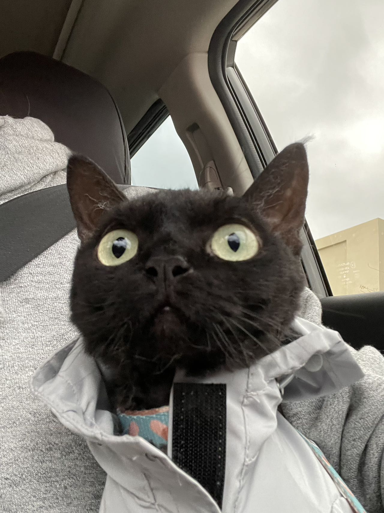
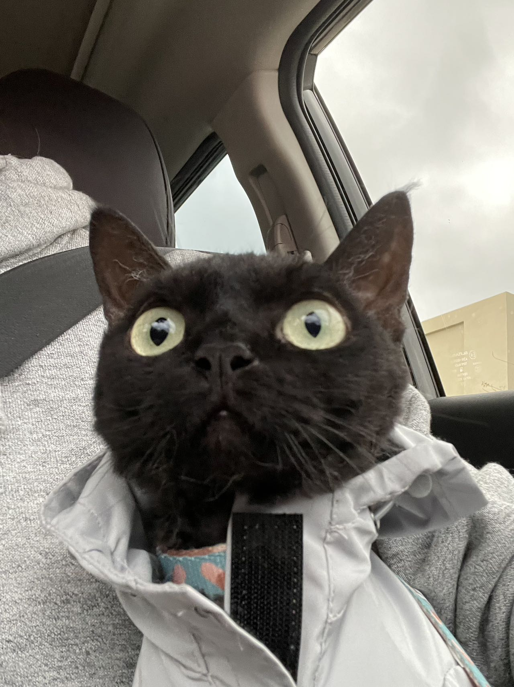

Pets
Bacon Q Dog

Bacon Q. Dog is a 9yr old labradoodle. He enjoys a walk or two around the neighborhood, as long as he can pretend that he doesn't see any of the other animals to avoid the embarrassment of not wanting to admit he has no wolf-like skills in chasing them.
At night just as the rest of the family is ready to relax, Bacon suddenly wants to release all of his energy. He will place his toys on a mini couch and frantically drag the couch around, giving his toys "a ride." There is also a lot of rolling. Lots and lots of rolling.
Photo Gallery


Likes
Santa

Santa was born during COVID on 1/10/2021, she's 2 and a half years old right now.
She's a Devon Rex which means her personality is more like that of a a dog.
Photo Gallery
 



Likes
Lulu

Lulu is a lively guinea pig who enjoys eating carrots and peppers. When not given any carrots or peppers she will squeak.
Lulu is very adventurous, she will explore her surroundings looking for food and is not afraid.
Photo Gallery


Likes
Miumiu

Miumiu is a five-year-old silver gradient British shorthair cat. She was born in Russia and raised in the United States and China. She is a mom of two babies. She loves to sleep.
Miumiu is kind of timid and afraid to meet strangers. But she is very close to her family, she loves to lie next to her family. She is very talkative and loves to meow.
Photo Gallery